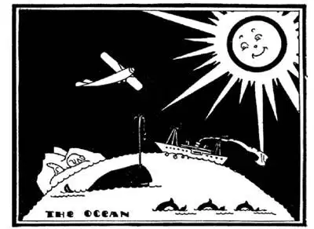
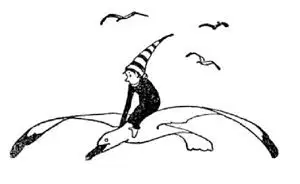

24
The Bridge Across the Ocean
越洋之旅

WHEN you go to Europe you have to take two things with you besides your ticket and your luggage. I wonder if you can guess what they are. You have to take plenty of money, but not of your country, as it wouldn’t be any good, but of the kind used in the country to which you are going; and the second thing you have to have is a passport. A passport is a little book with only one picture in it—your own—and very few pages. The reading is not a story—it gives you permission to land in the country to which you are going. It is like a ticket of admission: Admit only the person whose picture is in the book. They won’t let you go aboard the ship or airplane unless you have a passport, and they won’t let you get off the ship unless you have a passport.
It is about 3,000 miles across the Atlantic Ocean from New York, the largest city in the New World, to London, the largest city in the Old World.
Columbus took over a month to cross the Atlantic Ocean from Europe to America.
We can cross in less than a week by ship?
We can cross in less than a day by airplane!
But there is something that crosses the ocean faster than that and does it every day and is always on time. You would never guess what it is. It’s the sun. The sun crosses from London to New York in five hours and does it every day.
The people in London, when the sun reaches its highest point in the sky over their heads, set their clocks at 12 o’clock—midday. Five hours later the sun has reached New York and the people there set their watches at 12 o’clock too, because that’s what 12 o’clock means: “when the sun is highest in the sky.” While the sun has been crossing the ocean all the watches and clocks in London have been ticking along, so it is 5 o’clock in London when it is 12 o’clock here in New York. That is, London clocks are five hours ahead of our clocks.
When you sail for London you have to set your watch ahead each night when you go to bed, so that when you reach London your watch will be five hours ahead of the time you started with. You will then be just right with London time when you reach London. When you sail back you must put your watch back too. If you telephoned to London now at 10 o’clock in the morning and asked them what time it was they would say 3 P. M.
The clocks on board ship look the same as our clocks at home, but they strike differently. Our clocks, as you know, strike once for 1 o’clock, twice for 2 o’clock, and so on, but on board ship a clock strikes two bells for each hour from 1 o’clock to 4 o’clock, when it strikes eight times. It strikes one bell more for the in-between halves of the hour. Then it starts all over again—one stroke at 4:30, two at 5, and so on—never more than eight strokes altogether.
“A watch” on board ship doesn’t mean only a watch that you put in your pocket. It means something else too. A ship doesn’t stop going at night. A ship must keep on going, night as well as day, so the men, the officers and crew who run the ship, take turns at running the ship, as they can’t stay awake all the time, and their turns are called “watches,” because they must be wide awake and watching when it is their “watch.” Some men are running the engines, some are steering the ship, and some are just watching out to see that they do not run into other ships while the others are sleeping.

What is it that crosses the ocean in five hours and does it every day
?
什么东西五个小时就越过大洋，而且每天如此？
How can the captain, when he leaves New York, know the way to go to London, when all the ocean in front of him as far as he can see on every side is just broad flat water or rolling waves or thick fog, with no sign-posts to guide him?
Right in front of the steering-wheel is a box in which is a little pointer that, no matter how much the ship rises and falls, or twists and turns, or rears and plunges, always points one way. The box with its pointer is called a compass. You know what a magnet is—a little thing like a small horseshoe that pulls needles and nails to it. Well, near the North Pole there is a spot on the World like a magnet and this spot pulls all the compasses on the World toward it. So that spot on the World that pulls all the compasses toward it is called the Magnet-ic pole, though there is no pole. This Magnetic pole is where the stem would be if the World were an orange or an apple, though there is no stem.
The captain knows from the way the compass points which way he must go to reach England. He doesn’t follow the way the compass points—that would bring him to the Magnetic pole.
When it’s fine weather at sea the passengers have a fine time too. They play games, they dance, they take photographs, they write letters and postcards, they read books, they eat five meals a day, they lie in long steamer chairs wrapped up in rugs, and look out over the ocean or talk or sleep. Now and then porpoises, that look like big fishes, swim along the side or just ahead of the ship, and jump out of the water and dive in again, as if they were running a race with the ship. Occasionally a mountain of ice may be seen floating in the sea, many many times bigger than the ship, called an iceberg. It has broken away from the frozen part of the ocean far up north and floated down. And then at times a whale like a little island may rise out of the water, spout a fountain into the air, then sink out of sight again.
Sometimes, but not often, the sea is so smooth it is like glass, no wind and no waves except those which the ship itself makes. That’s why the Atlantic Ocean is sometimes called “The Big Pond.” But then again the wind blows, clouds rise, rain pours down, the waves rise up higher and higher until the sea is all moving hills and valleys of water, and the ship pitches up and down and rolls and tosses from side to side. It is necessary to put fences on the dining tables to keep the dishes from sliding off, and of course many people are seasick. The ship slides down one water hill and rises up the next water hill, and, big though it is, seems almost to turn over. But it seldom does turn over or sink unless it runs into an iceberg or another ship and smashes a hole in its side.
But it isn’t rough weather that the captain fears most of all. It is a sea fog, especially when he knows there are other ships near, for when there is a fog he cannot see his way at all. It is like groping your way about in the dark at night, only the ship has no arms. The captain slows the ship down till it barely moves. He starts a big, deep horn a-blowing by clock-work, and it blows about once a minute regularly day and night as long as the fog lasts, which may be for several days, while sailors peer over the ship’s side listening and looking. They can hear another ship’s fog-horn some distance away, but often they cannot see another ship only a few feet away. When at last the fog clears off, land may be in sight—England.
We can tell land is near long before we actually see it. How do you suppose? Large white birds called sea-gulls come out to meet the ship, but not as friends come out to welcome you. They are looking for food that they know is dumped overboard from the ship’s kitchen. Just before we do land a man comes out in a small boat to meet the big ship. The big ship doesn’t stop; it lets down over the side a ladder made of rope and the man grabs hold of the rope, kicks the boat away, and climbs aboard. Who do you suppose he is? Why do you suppose they take him aboard? He is the new captain of the ship. He is called the pilot, and it is his job to bring the ship into the harbor. A big ship is so big it can’t sail into the dock itself; it has to have small boats called tug-boats push and pull it. A broad gang-plank is laid like a bridge across from the dock to the deck and the passengers and their baggage go ashore. The people in England speak English, so you can ask questions and understand their answers, though their language sounds strange to us and our language sounds funny to them. They call it “an American accent.” You must show your passport and you must open all your bags and let a man examine everything inside before he will let you go on. So you must have nothing you don’t want him to see. This man is called a customs officer. You may have to pay for some things you have. This that you have to pay is called a “duty.”

【中文阅读】
要去欧洲的话，除了车票和行李之外，你还得带两样东西。我不知道你能不能猜出来是什么。你得带足够钱，但不是你自己国家的钱，因为那将一点儿用都没有，而要带目的地国家使用的钱；你要带的第二样东西是护照。护照是一个小本子，里面只有一张照片——你自己的照片——和很少几页纸。里面的内容不是讲故事——而是准许你去你要去的国家。护照就像一张入场券：只允许本子里照片中的那个人进入。没有护照，他们不会让你上船或登机，没有护照他们也不会让你下船进入另一个国家。
从“新大陆”最大的城市纽约出发，到“旧大陆”最大的城市伦敦，要在大西洋上航行约3000英里。
哥伦布航行了一个多月才从欧洲越过大西洋抵达美洲。
我们现在乘船一周之内就能到。
坐飞机的话，还用不了一天呢！
但是有一样东西越过大西洋比飞机还要快，而且天天越过大西洋，始终准时到达。你绝对猜不出那是什么。是太阳。太阳从伦敦越过大洋到达纽约只需 要五个小时，而且每天都是这样。
住在伦敦的人，当太阳到达他们头顶上空最高点时，把时钟设为12点——也就是正午。五个小时后，太阳到达纽约，那里的人也把手表设为12点，因为12点就意味着“当太阳在天空中最高点的时候”。当太阳跨越大洋的时候，伦敦所有的钟表都在滴答滴答走个不停，所以当纽约这里12点的时候，伦敦已是下午5点了。也就是说，伦敦的时钟比我们的快五个小时。
如果你乘船去伦敦，每天晚上睡觉前你必须把手表调快一点，这样当你到达伦敦时，你的手表就会比出发时的时间快了五个小时，这就正好和伦敦的时间一致了。当你坐船返航时，你也必须把手表调回来。如果你在上午10点打电话到伦敦去问他们那里是几点，他们会说是下午3点。
船上的时钟和我们家里的时钟看起来是一样的，但敲钟报时的方式却不一样。你知道，我们家里的钟1点钟敲一次，2点钟敲两次，以此类推，最多敲十二次，但船上的钟从1点到4点每个小时的时间敲两次，也就是1点敲两次，2点敲四次，以此类推，到了4点敲八次。介于中间的半点还要敲一次。过了4点又从头开始——4点半敲一次，5点敲两次，6点敲四次，以此类推，每次报时永远不会超过八次。
船上的“表”并不只表示可以放进口袋里的手表。它还有其他的意思。 [1] 轮船在夜晚并不停航。轮船必须不分昼夜地持续航行，因此船上的人，全船工作人员轮流开船，因为他们不可能始终保持清醒，他们轮流上岗，就叫“值班”，因为值班时，他们不能有丝毫睡意，必须时刻留意。有人操纵发动机，有人掌舵，还有人就是在别人睡觉时专门密切观察四周以确保不会撞到其他船只。 [2]
从纽约前往伦敦的航海途中，前方是一望无际的大海，有时风平浪静，有时波涛滚滚，有时大雾弥漫，没有任何路标指引，船长是如何确定方向（way）的呢？
就在舵轮的前面有一个盒子，里面有一根小指针，无论轮船如何起伏震荡，盘旋摇晃，还是前后颠簸，指针始终指着一个方向。这个有着小指针的盒子叫做罗盘。你知道磁铁是什么——一个像马蹄铁的小东西，可以把针和钉子吸在上面。那么，在北极附近世界上有一个地点就像磁铁一样，它使得世界上所有的罗盘都指向它的方向。因此世界上那个使所有罗盘都指向它的方向的地点叫 做磁极，尽管那里并没有一个马蹄形的磁铁。如果世界是个橙子或者苹果的话，这个磁极就是在橙子柄或者苹果柄的位置，尽管上面没有任何柄。
船长通过罗盘指的方向知道要去英国应走哪个方向。他并不是顺着罗盘指针的方向走，那样的话，就会走到磁极去了。
海上天气好的时候，船上的乘客也会度过一段好时光。他们玩游戏、跳舞、拍照、写信、写明信片、看书、一天吃五餐，他们裹着毛毯躺在长长的甲板躺椅上向外眺望大海或者聊天或者睡觉。不时有海豚出现，看起来就像很大的鱼，它们游在船的一侧或是船头，跳出水面又潜入水中，好像在和轮船竞赛一样。偶尔能看到巨大如山的冰块漂浮在海上，比轮船大好多好多倍，叫做冰山。冰山是从北极海洋冰川破裂开的大块漂浮冰。有时还能看到像小岛一样大的鲸鱼浮出水面，向空中喷出一股水柱，然后又沉入水中不见了。
有时，但并不是经常，平静的海面就像一面镜子，风平浪静，只有轮船驶过掀起的一点浪花。这就是为什么大西洋有时被叫做“大池塘”。但是风平浪静之后，又是风起云涌，大雨如注下，波涛汹涌，海浪越升越高直到大海成了一片移动的浪之山，水之谷。轮船随风浪剧烈地上下颠簸，左右摇晃。这时就必须在餐桌边装上小围栏，以免就餐时菜肴滑落下去。当然很多人都会晕船。轮船从一个巨浪上滑下来又升到下一个巨浪上，尽管船很大，但感觉就像要翻船。但轮船很少向一侧翻倒或者下沉，除非是撞上了冰山或者其他船只，造成船侧洞穿。
但船长最担忧的并不是恶劣的天气。他怕的是海上的大雾，尤其是当他知道附近还有其他轮船时，因为一旦出现浓雾，他根本就看不清方向。就像你在夜晚的黑暗中摸索着向前走一样，只是轮船没有胳膊。船长把船开得很慢很慢，几乎要停下来。他鸣响一只又大又深的喇叭，喇叭由发条装置控制，大约每分钟鸣一次，不分昼夜定时响起，直到浓雾散尽。有时大雾会持续好几天，这段时间船员在船舷上认真值守，时而侧耳倾听，时而仔细查看，他们能听到远处船只的雾号，但常常看不见近在咫尺的另一艘船。当大雾最终散去的时候，陆地也许就在眼前——看到英国了。
其实在我们看到陆地之前，早就能知道陆地不远了。你猜想是怎么知道的呢？这时叫做海鸥的白色大鸟飞出来迎接轮船，但并不是作为朋友来迎接你的。它们是在找食物，它们知道船上厨房要向舷外倒好吃的东西。就在着陆前，有一个人坐一艘小船出来靠近大船。大船并不停下来，从船舷放下一个绳子做的梯子，这个人抓住绳子，把小船踢开，爬上大船。你想他是谁？你猜他们为什 么要把他拉到船上来呢？他是大船的新船长，叫做领航员，他的工作就是把轮船领进港口。大船很大，不能自己驶进码头；它必须靠几条叫做拖船的小船把它拖拽进去。一块宽宽的跳板被放下，横跨码头和甲板，就像小桥一样，乘客带着行李就上岸了。英国人说英语，所以有问题可以问他们，你也听得懂他们的回答，尽管他们说的话我们听起来怪怪的，而我们说的话他们觉得有点可笑。他们说这是“美国腔”。上岸后，你必须出示护照，打开行李让一个人检查里面的所有东西，然后他才能让你走。因此你不能装任何你不想让他看到的东西在里面。这个人叫做海关官员。你也许要为你带的某些东西付钱。你要付的钱叫做“关税”。